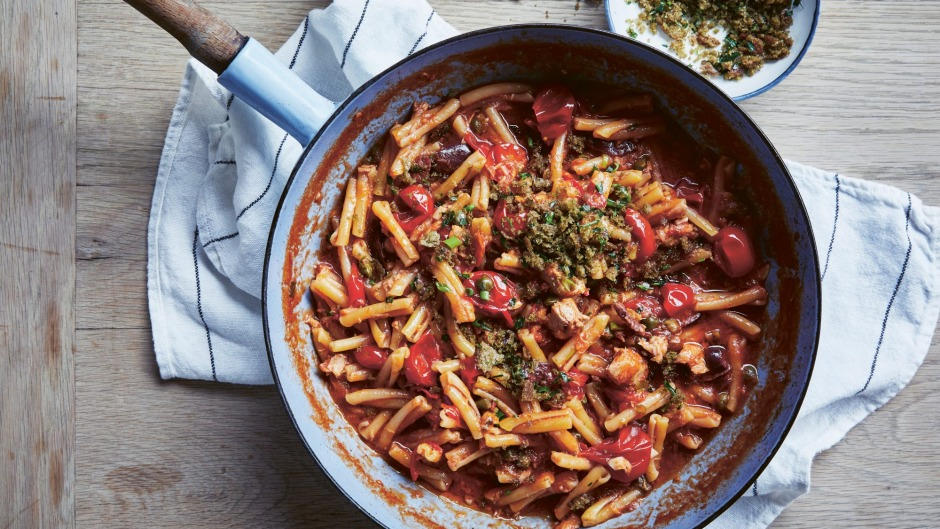
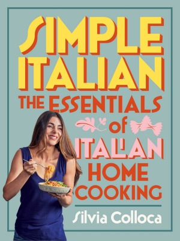

SILVIA COLLOCA |

PROMOTIONS
 Our second cookbook New Classics is out now
Our second cookbook New Classics is out now
 Good Food restaurant gift card
Good Food restaurant gift card
 Good Food Guide 2020 on sale now
Good Food Guide 2020 on sale now
The Italian-Australian actress and cookbook author shares her top tips for perfect pasta, every time.
Have you ever seen an Italian salting the pasta cooking water? We go by the fistful. This is because salt is actually part of your overall seasoning. No matter how spectacular the sauce is, if you don't salt the water enough the pasta will be bland and, therefore, the whole dish will be bland. Your pasta cooking water should taste almost as salty as the sea.
It doesn't matter when you salt it. You can wait for the water to come to the boil, add the salt and stir, then wait until it comes back to a rolling boil before adding the pasta, or you can add salt to cold water and bring it to the boil. If you do this, make sure you stir the salt well until it dissolves; otherwise it can settle on the bottom of your pan and act as a corrosive. I should also add that pasta needs to be cooked in plenty of water, so use a big pan.

If you do, the oil will float to the top, rendering it completely useless, then when you drain your pasta the oil coating will prevent the sauce from adhering properly. The only way to stop pasta from sticking together is to boil it in plenty of salted water, making sure you stir as you drop it in and a few times as it cooks.
Unless you are using your long strands as an addition to a soup, you should never break them so they fit in the pan more easily. Just use a bigger pan. Long pasta, such as spaghetti, linguine, tagliatelle and tagliolini, are designed to be twirled around a fork, enveloped in the sauce, thus creating a fabulous and satisfying mouthful. As with every rule there is one exception, and that is if you are making ziti with Genovese sauce, where the pasta is broken by hand. Just to make things confusing!
Never cook your pasta over low heat or it will turn into a gluey mess. A fierce rolling boil is what is needed.
This is probably the most important rule of all. Italians take the concept of al dente extremely seriously. It literally translates as "to the tooth" and that's an accurate indication of how you need to cook it. As a rule of thumb, al dente means cooking pasta for a minute or two less than you would instinctively think.
Once your pasta is overcooked there is no saving it, and no sauce – however delicious – can repair the damage. This particularly applies to packaged dried pasta, which Italians consume most days. Check the suggested cooking time on the packet, then slash it by 60-90 seconds. Once the pasta is removed from the water, the residual heat will continue the cooking process, and if you are tossing the pasta in a sauce, that too will count as cooking time. All of which means that if you observe the packet instructions, your pasta will be overdone by the time you eat it.
The first few times you might think it's not right, that it needs a few more minutes, but trust me, the al dente texture will grow on you and allow you to better appreciate the flavour of the pasta itself. You'll probably dress it with less sauce for this very reason.
And as a bonus, al dente pasta is easier to digest. Fresh pasta is more forgiving with a softer texture than dried pasta, which is why it is particularly loved by youngsters.
I personally like to use a spaghetti spoon or slotted spoon to drag the cooked pasta straight into the sauce, using the cooking water that comes with it to thicken the sauce. If you don't feel comfortable doing this, drain it in a colander, but reserve about a cup of the cooking water. It's full of starches and can really help bind the final dish together.
Can you picture a bowl of pale noodles topped with a few tablespoons of red sauce, a dusting of parmigiano and a lone basil leaf? OK, now try to unsee it! If you want to cook Italian food like an Italian, make sure your pasta spends time mingling with the sauce so that every single strand, every rigatoni tube is well coated. We never plate the pasta first and spoon the sauce on top – if we did, the undressed pasta would invariably stick together like glue. I promise you, a well-tossed pasta dish will look infinitely more appealing and taste a million times better.
The sauce should coat the pasta evenly and lusciously, but not overwhelm it. If you have cooked your pasta to a perfect al dente, you will also want to taste its natural flavour. The sauce is a condiment so by all means be generous, but not wasteful. Speaking of which, if you are left with a little sauce on the plate, arm yourself with bread and mop away.
We call this action "scarpetta" (in Rome and in the south), "intingolo" around Tuscany and "puccia" in the north, where I grew up. Whatever you call it, it's a wonderful thing.
When pasta is presented to the table in an Italian household, all the diners are already sitting down, fork in hand, eagerly ready to twirl some spaghetti or stab some orecchiette while they are still hot. Unless you are serving pasta as a cold salad, which we often do in summer, your bowl of goodness needs to be consumed while still steaming. The main reason for this is that as the pasta cools down, it changes in texture, and so does the sauce.
There is nothing less palatable than eating a plate of congealed eggy carbonara; and on the other hand, there's nothing quite as sensual as devouring it while still hot, with its natural creaminess lusciously coating every single pasta strand and the crispy guanciale salting your tongue. One other important reason is that, as explained in point 5, the residual heat within the pasta will continue cooking it ever so slightly.
The more it sits, especially if it sits in a hot pan, the more it will cook.
Pasta is a main meal in its own right. On Italian menus you will find pasta (and sometimes rice) dishes under the name of "primi piatti"; these are first courses, and should not be confused with antipasto or entrees, and most certainly should never be treated as a side dish.
Of course, if you love your chicken parma with a side of spaghetti, I'm not going to stop you from enjoying what is undoubtedly a satisfying meal, but let's all agree that it is not Italian.
This is an edited extract from Simple Italian by Silvia Colloca, published by Plum, RRP $39.99. Photography by Rob Palmer. Buy now